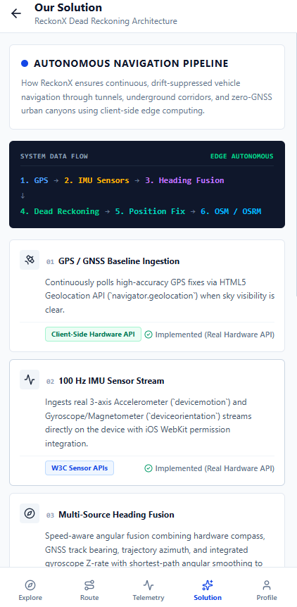
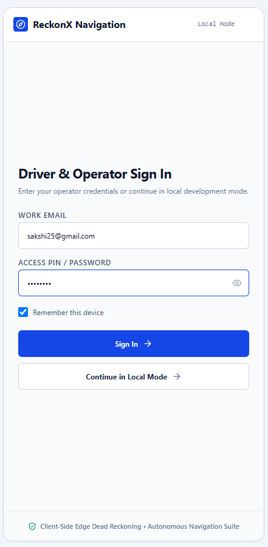
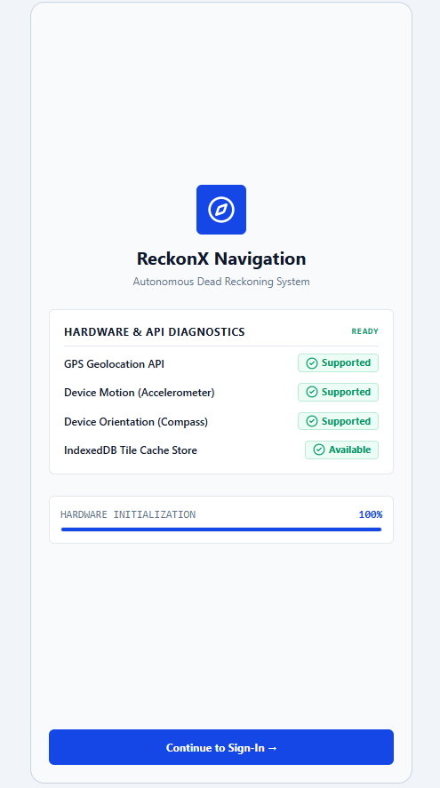
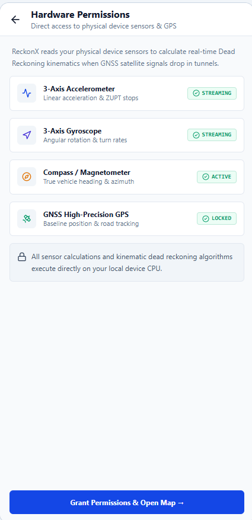
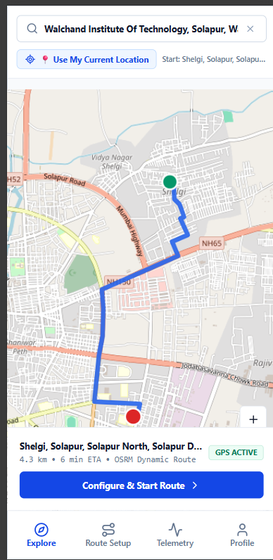
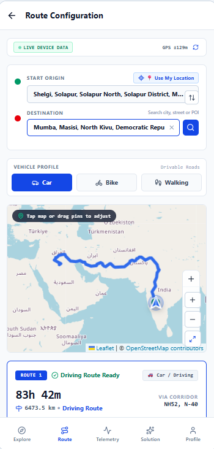
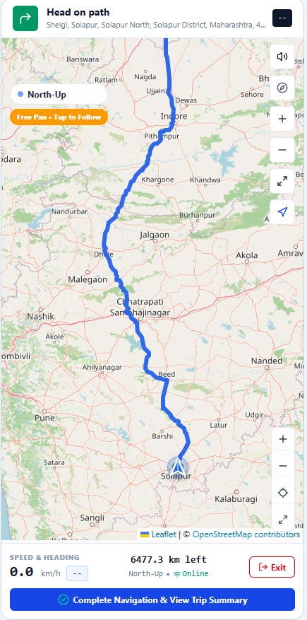
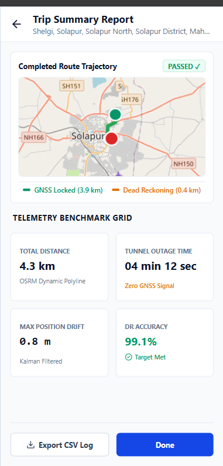
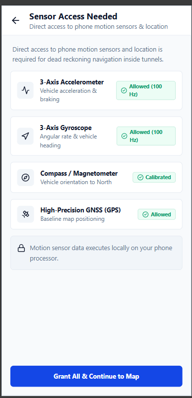
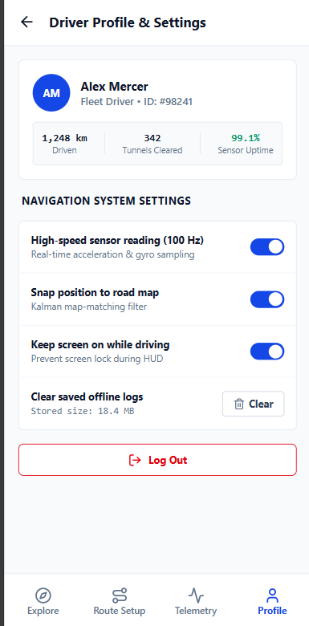

A smartphone-based Intelligent Dead Reckoning system designed to provide continuous and reliable vehicle positioning when GNSS signals are temporarily unavailable.
ABOUT THE PROJECT
ReckonX is an Intelligent Dead Reckoning (IDR) Engine that provides continuous and reliable vehicle positioning even when GNSS signals are temporarily unavailable.
The system uses smartphone sensors such as the accelerometer, gyroscope, magnetometer and GNSS. Sensor data is calibrated, synchronized and processed to support reliable vehicle navigation.
During GNSS availability, ReckonX combines GNSS and inertial measurements. When GNSS is degraded or lost, the system automatically switches to AI-based dead reckoning.
No specialized navigation hardware is required. ReckonX uses the sensors already available on modern smartphones.
THE CHALLENGE
GNSS signals can become unavailable in tunnels, underpasses, forests, urban canyons and other GNSS-denied environments.
Satellite signals may become unavailable, creating a need for continuous backup positioning.
Smartphone IMU measurements can be affected by noise, vibration and phone orientation.
IMU errors accumulate over time and can move the estimated trajectory away from the actual road.
Switching between GNSS and dead reckoning needs to remain smooth and interruption-free.
OUR SOLUTION
Accelerometer, Gyroscope, Magnetometer and GNSS
Calibration, synchronization and noise filtering
Motion estimation and abnormal sensor detection
GOOD / DEGRADED / LOST
AI + EKF + Map Matching

CORE FEATURES
Collects accelerometer, gyroscope, magnetometer and GNSS data directly from the smartphone.
Handles phone position, orientation, tilt and direction inside the vehicle.
Combines GNSS and inertial measurements to improve positioning stability.
Estimates vehicle speed and movement while detecting noisy or abnormal readings.
Continuously evaluates GNSS quality and selects the appropriate navigation mode.
Automatically activates AI-IDR during signal loss and smoothly restores GNSS when the signal returns.
Matches the estimated vehicle position to the road network to reduce drift.
Designed for on-device processing, reducing dependency on cloud connectivity.
APPLICATION SHOWCASE

The application starts with a driver/operator authentication screen before beginning navigation.

ReckonX checks the device capabilities and initializes the hardware required for navigation.

ReckonX verifies access to the smartphone sensors required for continuous navigation and dead reckoning.

Users can select a destination and preview the calculated route before starting navigation.

ReckonX provides route options before live navigation begins.

The live navigation screen displays the current vehicle position and route information during navigation.

After a navigation session, ReckonX provides a summary of the recorded trajectory and navigation data.

ReckonX provides real-time visibility into the smartphone sensors and GNSS information used for navigation and dead reckoning.

Drivers can view their profile and configure navigation, display and telemetry preferences.
INTELLIGENT SWITCHING
GNSS + IMU
Stable positioningAI + GNSS + IMU
Enhanced estimationAI-IDR Activated
IMU + AI + EKF + Map MatchingAdaptive Handoff
Smooth restorationTECHNICAL APPROACH
Smartphone IMU, GNSS receiver, calibration, conditioning, noise filtering and GNSS quality monitoring.
Motion classification, AI-based motion estimation and anomaly detection.
GNSS + INS fusion, GNSS deficit handling and switching between GNSS and IDR.
Predicts position and velocity, compares measurements with predictions and updates the navigation state.
Snaps the estimated position to the appropriate road network to produce a more realistic vehicle trajectory.
Continuous vehicle positioning, navigation trajectory and system status.
OUR INNOVATION
Automatically switches between GNSS and AI-IDR.
AI-based motion processing supports on-device navigation.
Uses road-network information to reduce trajectory drift.
Designed around smartphone sensors instead of dedicated hardware.
Accounts for phone orientation and movement inside the vehicle.
Maintains navigation continuity during GNSS outages.
IMPACT & BENEFITS
Continuous navigation in areas with temporary GNSS loss.
Reliable tracking through tunnels, ghats and remote highways.
Continuous route tracking and reliable passenger pickups.
Resilient navigation for critical routing during satellite blind spots.
Improved navigation across urban canyons and stacked overpasses.
Supports navigation in multi-level basement parking environments.
TECHNICAL & GREEN BENEFITS
Vector navigation can operate without active cellular data or cloud dependency.
AI and sensor fusion help reduce the impact of inertial sensor errors.
The proposed approach avoids the need for additional dedicated tracking hardware.
Reducing wrong-route detours and idling can contribute to lower trip emissions.
RESEARCH FOUNDATION
RECKONX NAVIGATION
AI-ML based Intelligent Dead Reckoning for continuous and resilient vehicle navigation.
Explore ReckonX